Landscape analysis grouped by natural habitat level
Pollinator models
Simple landscapes (<20% natural habitat)
Correlation between independent variables in simple landscapes.
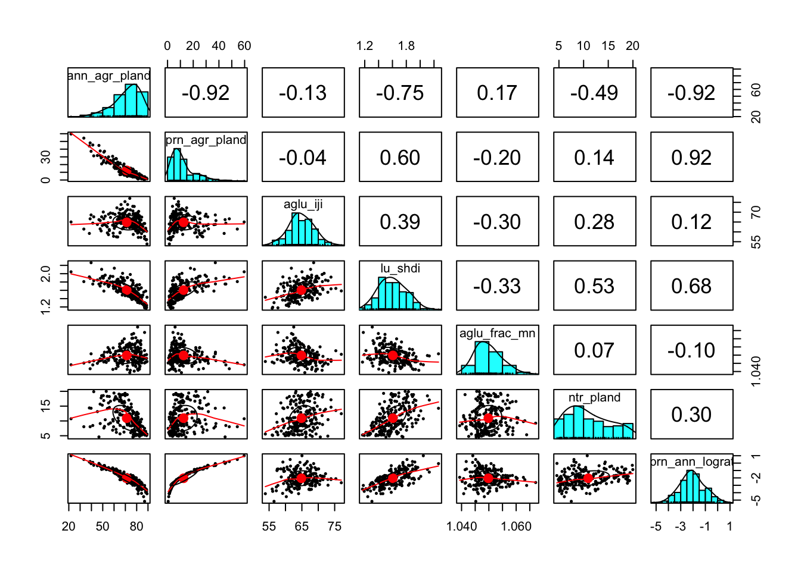
Pollinator delta for simple landscapes
dpol.sim.gam <- gam(delta_pollinators.margin ~
s(ann_agr_pland) +
s(aglu_iji) +
s(prn_agr_pland) +
s(aglu_frac_mn) +
s(lu_shdi) +
s(lu_ta),
data = wfs_sim)
summary(dpol.sim.gam)##
## Family: gaussian
## Link function: identity
##
## Formula:
## delta_pollinators.margin ~ s(ann_agr_pland) + s(aglu_iji) + s(prn_agr_pland) +
## s(aglu_frac_mn) + s(lu_shdi) + s(lu_ta)
##
## Parametric coefficients:
## Estimate Std. Error t value Pr(>|t|)
## (Intercept) 1.768640 0.004801 368.4 <2e-16 ***
## ---
## Signif. codes: 0 '***' 0.001 '**' 0.01 '*' 0.05 '.' 0.1 ' ' 1
##
## Approximate significance of smooth terms:
## edf Ref.df F p-value
## s(ann_agr_pland) 2.604 3.397 45.697 < 2e-16 ***
## s(aglu_iji) 3.489 4.392 11.623 < 2e-16 ***
## s(prn_agr_pland) 7.501 8.411 14.360 < 2e-16 ***
## s(aglu_frac_mn) 1.192 1.359 15.299 8.69e-05 ***
## s(lu_shdi) 1.000 1.000 1.445 0.231
## s(lu_ta) 2.372 2.961 1.693 0.144
## ---
## Signif. codes: 0 '***' 0.001 '**' 0.01 '*' 0.05 '.' 0.1 ' ' 1
##
## R-sq.(adj) = 0.737 Deviance explained = 76.1%
## GCV = 0.005166 Scale est. = 0.0046785 n = 203concurvity(dpol.sim.gam, full = FALSE)## $worst
## para s(ann_agr_pland) s(aglu_iji) s(prn_agr_pland) s(aglu_frac_mn) s(lu_shdi)
## para 1.000000e+00 3.495190e-26 1.276431e-26 3.950579e-25 4.074300e-26 2.837600e-26
## s(ann_agr_pland) 3.517215e-26 1.000000e+00 4.147936e-01 9.684757e-01 1.531491e-01 6.520229e-01
## s(aglu_iji) 1.260709e-26 4.147936e-01 1.000000e+00 2.979959e-01 1.854495e-01 2.937927e-01
## s(prn_agr_pland) 3.912225e-25 9.684757e-01 2.979959e-01 1.000000e+00 1.738446e-01 4.480547e-01
## s(aglu_frac_mn) 4.021861e-26 1.531491e-01 1.854495e-01 1.738446e-01 1.000000e+00 1.672713e-01
## s(lu_shdi) 2.852411e-26 6.520229e-01 2.937927e-01 4.480547e-01 1.672713e-01 1.000000e+00
## s(lu_ta) 8.841006e-26 9.996979e-02 1.263688e-01 1.409439e-01 1.314534e-01 1.205648e-01
## s(lu_ta)
## para 8.766951e-26
## s(ann_agr_pland) 9.996979e-02
## s(aglu_iji) 1.263688e-01
## s(prn_agr_pland) 1.409439e-01
## s(aglu_frac_mn) 1.314534e-01
## s(lu_shdi) 1.205648e-01
## s(lu_ta) 1.000000e+00
##
## $observed
## para s(ann_agr_pland) s(aglu_iji) s(prn_agr_pland) s(aglu_frac_mn) s(lu_shdi)
## para 1.000000e+00 3.060105e-31 5.904924e-31 5.027925e-29 3.479742e-33 9.313202e-35
## s(ann_agr_pland) 3.517215e-26 1.000000e+00 1.676118e-01 8.900990e-01 6.879036e-02 6.125586e-01
## s(aglu_iji) 1.260709e-26 7.363499e-02 1.000000e+00 3.979171e-02 1.647540e-01 1.857947e-01
## s(prn_agr_pland) 3.912225e-25 8.513926e-01 1.013937e-01 1.000000e+00 1.353203e-01 4.312666e-01
## s(aglu_frac_mn) 4.021861e-26 3.878849e-02 1.312500e-01 7.402876e-02 1.000000e+00 1.289045e-01
## s(lu_shdi) 2.852411e-26 6.066387e-01 1.934696e-01 3.270472e-01 1.372452e-01 1.000000e+00
## s(lu_ta) 8.841006e-26 5.308125e-02 6.165593e-02 3.173862e-02 6.484571e-02 5.793377e-02
## s(lu_ta)
## para 5.952150e-31
## s(ann_agr_pland) 8.206342e-02
## s(aglu_iji) 1.673806e-02
## s(prn_agr_pland) 7.457102e-02
## s(aglu_frac_mn) 6.166725e-02
## s(lu_shdi) 7.347280e-02
## s(lu_ta) 1.000000e+00
##
## $estimate
## para s(ann_agr_pland) s(aglu_iji) s(prn_agr_pland) s(aglu_frac_mn) s(lu_shdi)
## para 1.000000e+00 3.062679e-28 7.726625e-29 1.945028e-27 1.230392e-28 1.271592e-28
## s(ann_agr_pland) 3.517215e-26 1.000000e+00 2.041713e-01 8.475226e-01 6.448691e-02 5.044038e-01
## s(aglu_iji) 1.260709e-26 5.398520e-02 1.000000e+00 3.890542e-02 1.319772e-01 1.522204e-01
## s(prn_agr_pland) 3.912225e-25 8.309419e-01 1.562758e-01 1.000000e+00 1.054344e-01 3.432870e-01
## s(aglu_frac_mn) 4.021861e-26 5.484914e-02 7.261641e-02 7.150715e-02 1.000000e+00 1.041805e-01
## s(lu_shdi) 2.852411e-26 4.516425e-01 1.912629e-01 2.542491e-01 1.162032e-01 1.000000e+00
## s(lu_ta) 8.841006e-26 5.259363e-02 5.381418e-02 4.780151e-02 5.670188e-02 5.729500e-02
## s(lu_ta)
## para 2.651862e-28
## s(ann_agr_pland) 5.916732e-02
## s(aglu_iji) 4.852983e-02
## s(prn_agr_pland) 5.062001e-02
## s(aglu_frac_mn) 6.252720e-02
## s(lu_shdi) 3.023601e-02
## s(lu_ta) 1.000000e+00# gam.check(dpol.sim.gam)Partial effects plots and partial residuals. If variables are highly correlated, variance in the partial residual plot can be much less than the actual variance: https://en.wikipedia.org/wiki/Partial_residual_plot
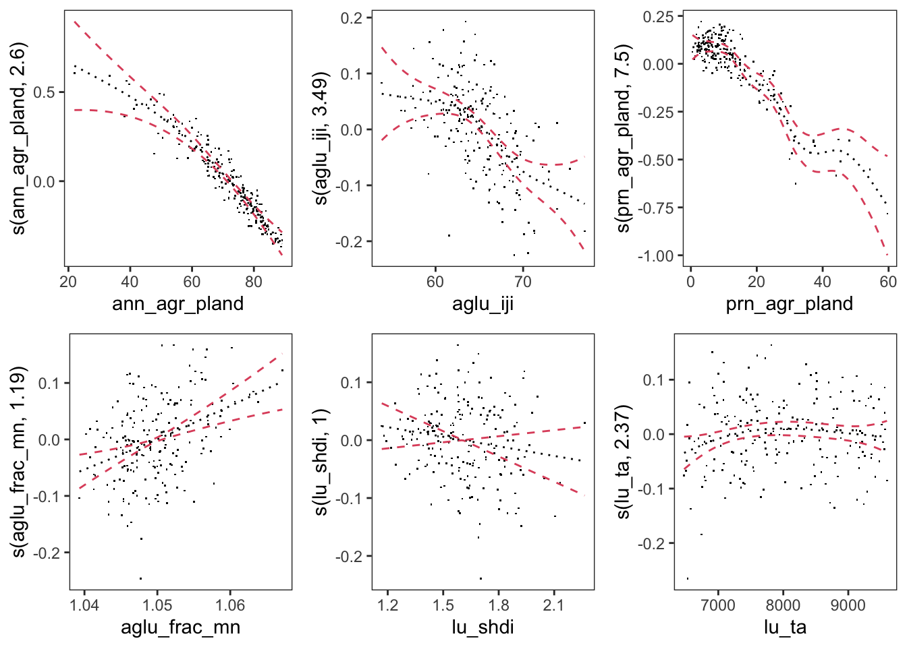
Predicted effects against actual points. Covariates of each plot(not on x axis) held at simple landscape averages.
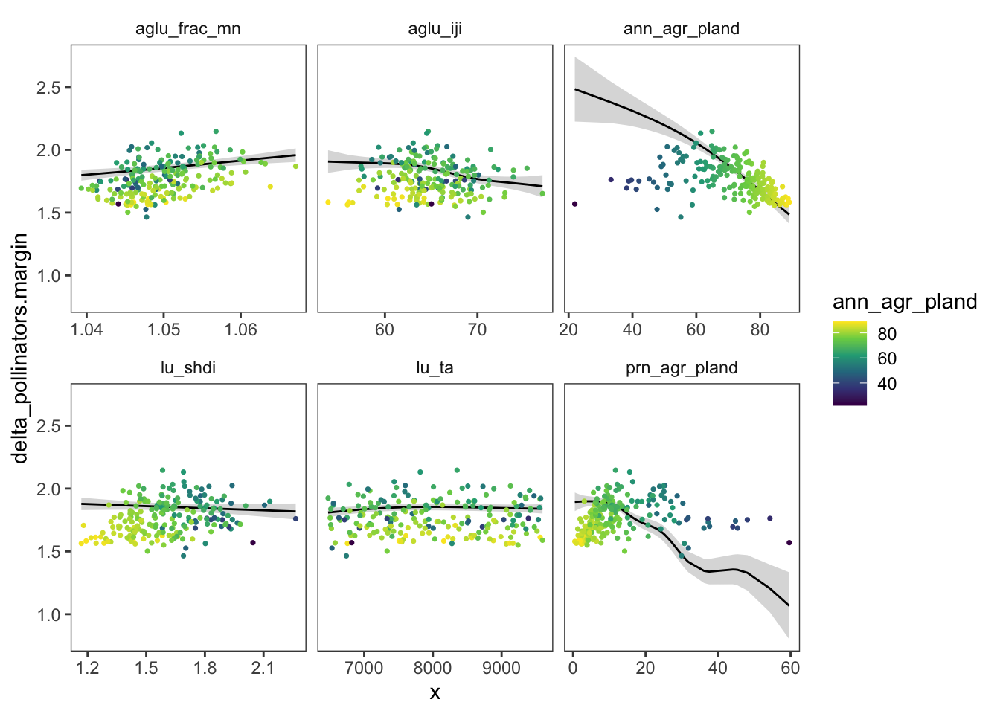
Without perennial agriculture or Shannon diversity
These two variables increased concurvity when included with annual agriculture
dpol.sim.gam2 <- gam(delta_pollinators.margin ~
s(ann_agr_pland) +
s(aglu_iji) +
s(aglu_frac_mn) +
# s(lu_shdi) +
s(lu_ta),
data = wfs_sim)
summary(dpol.sim.gam2)##
## Family: gaussian
## Link function: identity
##
## Formula:
## delta_pollinators.margin ~ s(ann_agr_pland) + s(aglu_iji) + s(aglu_frac_mn) +
## s(lu_ta)
##
## Parametric coefficients:
## Estimate Std. Error t value Pr(>|t|)
## (Intercept) 1.768640 0.006001 294.7 <2e-16 ***
## ---
## Signif. codes: 0 '***' 0.001 '**' 0.01 '*' 0.05 '.' 0.1 ' ' 1
##
## Approximate significance of smooth terms:
## edf Ref.df F p-value
## s(ann_agr_pland) 3.708 4.661 42.223 < 2e-16 ***
## s(aglu_iji) 2.446 3.119 3.963 0.00879 **
## s(aglu_frac_mn) 1.000 1.000 46.728 < 2e-16 ***
## s(lu_ta) 1.961 2.458 1.006 0.47264
## ---
## Signif. codes: 0 '***' 0.001 '**' 0.01 '*' 0.05 '.' 0.1 ' ' 1
##
## R-sq.(adj) = 0.59 Deviance explained = 60.8%
## GCV = 0.0076926 Scale est. = 0.0073093 n = 203concurvity(dpol.sim.gam2)## para s(ann_agr_pland) s(aglu_iji) s(aglu_frac_mn) s(lu_ta)
## worst 1.939261e-25 0.5135293 0.4882250 0.3660882 0.2412315
## observed 1.939261e-25 0.2313410 0.3539394 0.3255057 0.1717468
## estimate 1.939261e-25 0.1575112 0.3357790 0.2772659 0.1755208Partial effects plots and partial residuals
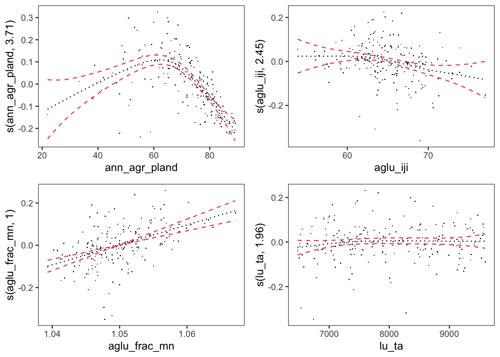
Predicted effects against actual points. Covariates of each plot(not on x axis) held at simple landscape averages.
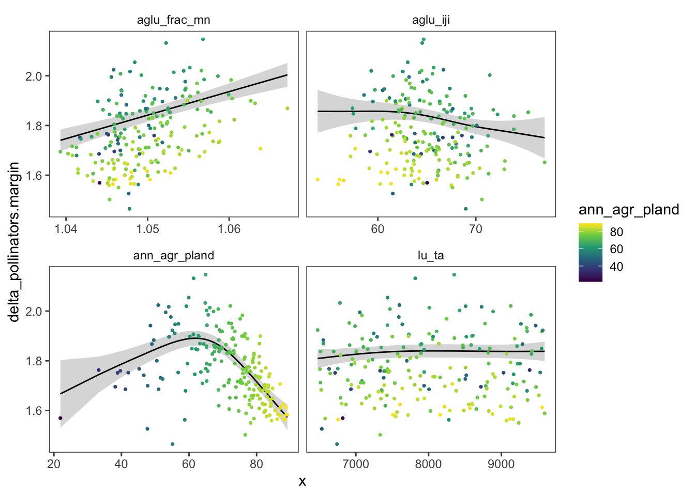
A composite variable of log ratio of annual to perennial ag
The two types of ag become relative to each other so the connection
to the original natural habitat gradient is lost. Therefore I added
ntr_pland into the model.
dpol.sim.gam3 <- gam(delta_pollinators.margin ~
s(prn_ann_lograt) +
s(ntr_pland) +
s(aglu_iji) +
s(aglu_frac_mn) +
# s(lu_shdi) +
s(lu_ta),
data = wfs_sim)
summary(dpol.sim.gam3)##
## Family: gaussian
## Link function: identity
##
## Formula:
## delta_pollinators.margin ~ s(prn_ann_lograt) + s(ntr_pland) +
## s(aglu_iji) + s(aglu_frac_mn) + s(lu_ta)
##
## Parametric coefficients:
## Estimate Std. Error t value Pr(>|t|)
## (Intercept) 1.76864 0.00521 339.5 <2e-16 ***
## ---
## Signif. codes: 0 '***' 0.001 '**' 0.01 '*' 0.05 '.' 0.1 ' ' 1
##
## Approximate significance of smooth terms:
## edf Ref.df F p-value
## s(prn_ann_lograt) 4.161 5.247 16.260 < 2e-16 ***
## s(ntr_pland) 1.063 1.122 131.456 < 2e-16 ***
## s(aglu_iji) 3.079 3.903 6.670 7.63e-05 ***
## s(aglu_frac_mn) 2.577 3.274 8.275 2.57e-05 ***
## s(lu_ta) 2.322 2.900 1.921 0.163
## ---
## Signif. codes: 0 '***' 0.001 '**' 0.01 '*' 0.05 '.' 0.1 ' ' 1
##
## R-sq.(adj) = 0.691 Deviance explained = 71.1%
## GCV = 0.0059244 Scale est. = 0.0055099 n = 203concurvity(dpol.sim.gam3)## para s(prn_ann_lograt) s(ntr_pland) s(aglu_iji) s(aglu_frac_mn) s(lu_ta)
## worst 2.276429e-24 0.5019678 0.3601966 0.5310411 0.4753209 0.2691309
## observed 2.276429e-24 0.3413470 0.3000680 0.4778711 0.4318476 0.1760535
## estimate 2.276429e-24 0.2945212 0.2754553 0.3939496 0.3739865 0.1940733Partial effects plots and partial residuals
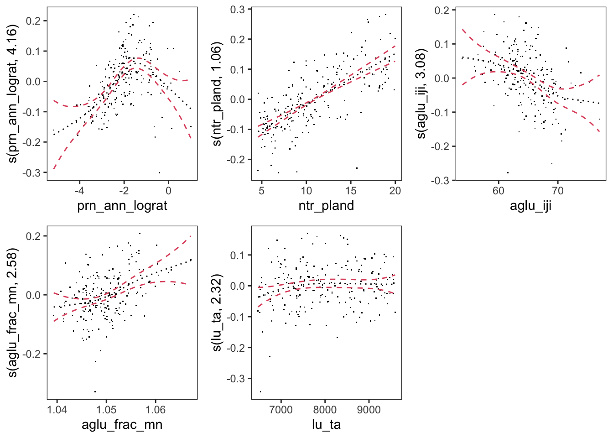
Predicted effects against actual points. Covariates of each plot(not on x axis) held at simple landscape averages.

Pollinator delta for moderate landscapes (20-50% natural habitat)
Correlation between predictors
pairs.panels(wfs_mod %>%
select(ann_agr_pland, prn_agr_pland, aglu_iji,
lu_shdi, aglu_frac_mn, ntr_pland, prn_ann_lograt),
cex.cor = 1, cex.labels=1, cex=0.5, method = "pearson")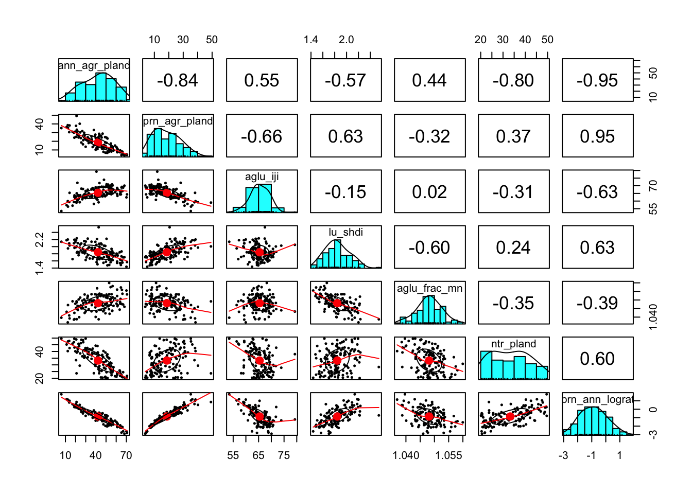
Like in simple landscapes, strong concurvity.
dpol.mod.gam <- gam(delta_pollinators.margin ~
s(ann_agr_pland) +
s(aglu_iji) +
s(prn_agr_pland) +
s(aglu_frac_mn) +
s(lu_shdi) +
s(lu_ta),
data = wfs_mod)
summary(dpol.mod.gam)##
## Family: gaussian
## Link function: identity
##
## Formula:
## delta_pollinators.margin ~ s(ann_agr_pland) + s(aglu_iji) + s(prn_agr_pland) +
## s(aglu_frac_mn) + s(lu_shdi) + s(lu_ta)
##
## Parametric coefficients:
## Estimate Std. Error t value Pr(>|t|)
## (Intercept) 2.059182 0.008748 235.4 <2e-16 ***
## ---
## Signif. codes: 0 '***' 0.001 '**' 0.01 '*' 0.05 '.' 0.1 ' ' 1
##
## Approximate significance of smooth terms:
## edf Ref.df F p-value
## s(ann_agr_pland) 4.146 5.133 23.805 < 2e-16 ***
## s(aglu_iji) 4.378 5.410 4.486 0.000686 ***
## s(prn_agr_pland) 5.564 6.696 10.647 < 2e-16 ***
## s(aglu_frac_mn) 2.166 2.739 13.361 1e-06 ***
## s(lu_shdi) 1.000 1.000 0.002 0.967751
## s(lu_ta) 1.000 1.000 6.321 0.013311 *
## ---
## Signif. codes: 0 '***' 0.001 '**' 0.01 '*' 0.05 '.' 0.1 ' ' 1
##
## R-sq.(adj) = 0.672 Deviance explained = 71.7%
## GCV = 0.011976 Scale est. = 0.010256 n = 134concurvity(dpol.mod.gam, full=FALSE)## $worst
## para s(ann_agr_pland) s(aglu_iji) s(prn_agr_pland) s(aglu_frac_mn) s(lu_shdi)
## para 1.000000e+00 5.940922e-27 3.001570e-27 2.954373e-26 5.864606e-26 2.887887e-27
## s(ann_agr_pland) 5.941503e-27 1.000000e+00 9.081850e-01 7.709205e-01 3.471142e-01 3.996283e-01
## s(aglu_iji) 3.138061e-27 9.081850e-01 1.000000e+00 6.553261e-01 1.808796e-01 3.146720e-01
## s(prn_agr_pland) 2.963899e-26 7.709205e-01 6.553261e-01 1.000000e+00 2.701383e-01 5.028945e-01
## s(aglu_frac_mn) 5.875167e-26 3.471142e-01 1.808796e-01 2.701383e-01 1.000000e+00 4.428449e-01
## s(lu_shdi) 2.786048e-27 3.996283e-01 3.146720e-01 5.028945e-01 4.428449e-01 1.000000e+00
## s(lu_ta) 5.228663e-26 2.071652e-01 1.750303e-01 1.634740e-01 2.121595e-01 2.463950e-01
## s(lu_ta)
## para 5.107308e-26
## s(ann_agr_pland) 2.071652e-01
## s(aglu_iji) 1.750303e-01
## s(prn_agr_pland) 1.634740e-01
## s(aglu_frac_mn) 2.121595e-01
## s(lu_shdi) 2.463950e-01
## s(lu_ta) 1.000000e+00
##
## $observed
## para s(ann_agr_pland) s(aglu_iji) s(prn_agr_pland) s(aglu_frac_mn) s(lu_shdi)
## para 1.000000e+00 2.727826e-31 9.799843e-30 2.361291e-29 1.785641e-32 1.309089e-32
## s(ann_agr_pland) 5.941503e-27 1.000000e+00 3.520376e-01 6.908235e-01 2.924194e-01 3.389941e-01
## s(aglu_iji) 3.138061e-27 3.225735e-01 1.000000e+00 5.434168e-01 1.055242e-01 1.184936e-01
## s(prn_agr_pland) 2.963899e-26 7.060632e-01 5.028774e-01 1.000000e+00 1.760762e-01 4.408835e-01
## s(aglu_frac_mn) 5.875167e-26 1.996038e-01 7.737697e-02 1.803363e-01 1.000000e+00 3.854633e-01
## s(lu_shdi) 2.786048e-27 3.644039e-01 1.755666e-01 4.468635e-01 3.791227e-01 1.000000e+00
## s(lu_ta) 5.228663e-26 6.753496e-02 4.077721e-02 5.921496e-02 5.469810e-02 8.656661e-02
## s(lu_ta)
## para 1.258005e-33
## s(ann_agr_pland) 5.954404e-02
## s(aglu_iji) 5.218076e-02
## s(prn_agr_pland) 7.158946e-02
## s(aglu_frac_mn) 8.870955e-02
## s(lu_shdi) 4.760122e-02
## s(lu_ta) 1.000000e+00
##
## $estimate
## para s(ann_agr_pland) s(aglu_iji) s(prn_agr_pland) s(aglu_frac_mn) s(lu_shdi)
## para 1.000000e+00 2.939964e-29 3.205692e-29 2.139917e-28 3.246434e-28 1.613363e-29
## s(ann_agr_pland) 5.941503e-27 1.000000e+00 3.845905e-01 6.265938e-01 2.303574e-01 2.855604e-01
## s(aglu_iji) 3.138061e-27 3.729062e-01 1.000000e+00 4.598821e-01 9.065323e-02 1.083315e-01
## s(prn_agr_pland) 2.963899e-26 6.796568e-01 4.192708e-01 1.000000e+00 1.371711e-01 3.667042e-01
## s(aglu_frac_mn) 5.875167e-26 2.387891e-01 7.571724e-02 1.595230e-01 1.000000e+00 3.577070e-01
## s(lu_shdi) 2.786048e-27 3.268846e-01 1.437966e-01 3.750766e-01 3.378364e-01 1.000000e+00
## s(lu_ta) 5.228663e-26 6.091076e-02 4.584781e-02 4.776450e-02 6.458661e-02 8.550852e-02
## s(lu_ta)
## para 7.306340e-29
## s(ann_agr_pland) 5.995903e-02
## s(aglu_iji) 5.901373e-02
## s(prn_agr_pland) 7.116351e-02
## s(aglu_frac_mn) 8.855300e-02
## s(lu_shdi) 5.117211e-02
## s(lu_ta) 1.000000e+00Partial effects plots and partial residuals
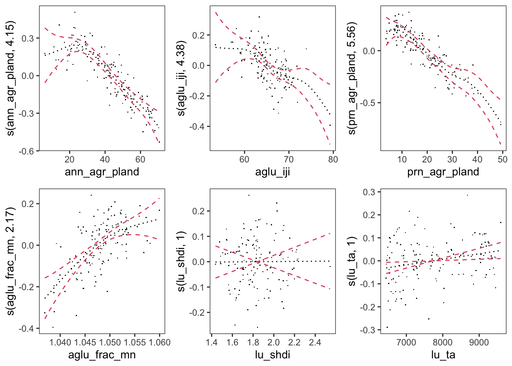
Predicted effects against actual points. Covariates of each plot(not on x axis) held at moderate landscape averages.
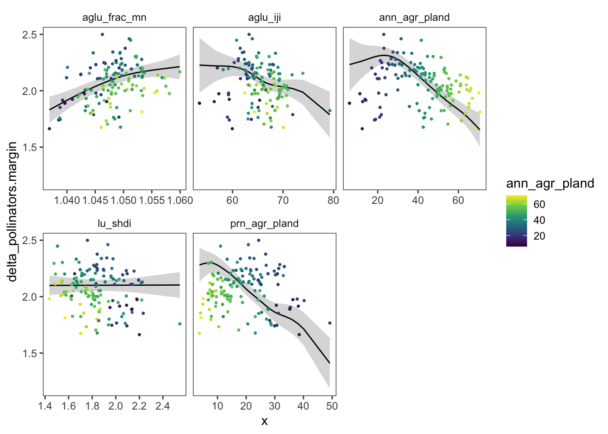
Without perennial ag and landscape iji
These variables increased concurvity when included with annual agriculture
dpol.mod.gam2 <- gam(delta_pollinators.margin ~
s(ann_agr_pland) +
# s(aglu_iji) +
# s(prn_agr_pland) +
s(aglu_frac_mn) +
s(lu_shdi) +
s(lu_ta),
data = wfs_mod)
summary(dpol.mod.gam2)##
## Family: gaussian
## Link function: identity
##
## Formula:
## delta_pollinators.margin ~ s(ann_agr_pland) + s(aglu_frac_mn) +
## s(lu_shdi) + s(lu_ta)
##
## Parametric coefficients:
## Estimate Std. Error t value Pr(>|t|)
## (Intercept) 2.05918 0.01092 188.5 <2e-16 ***
## ---
## Signif. codes: 0 '***' 0.001 '**' 0.01 '*' 0.05 '.' 0.1 ' ' 1
##
## Approximate significance of smooth terms:
## edf Ref.df F p-value
## s(ann_agr_pland) 5.168 6.319 14.404 < 2e-16 ***
## s(aglu_frac_mn) 1.444 1.774 6.615 0.0022 **
## s(lu_shdi) 1.053 1.102 18.402 2.34e-05 ***
## s(lu_ta) 1.000 1.000 4.220 0.0421 *
## ---
## Signif. codes: 0 '***' 0.001 '**' 0.01 '*' 0.05 '.' 0.1 ' ' 1
##
## R-sq.(adj) = 0.489 Deviance explained = 52.3%
## GCV = 0.017231 Scale est. = 0.015988 n = 134concurvity(dpol.mod.gam2, full = TRUE)## para s(ann_agr_pland) s(aglu_frac_mn) s(lu_shdi) s(lu_ta)
## worst 1.501387e-25 0.5597992 0.5843440 0.5969329 0.3826714
## observed 1.501387e-25 0.4295216 0.5432946 0.5529519 0.1901933
## estimate 1.501387e-25 0.4782461 0.4874233 0.5139299 0.1956556Partial effects plots and partial residuals
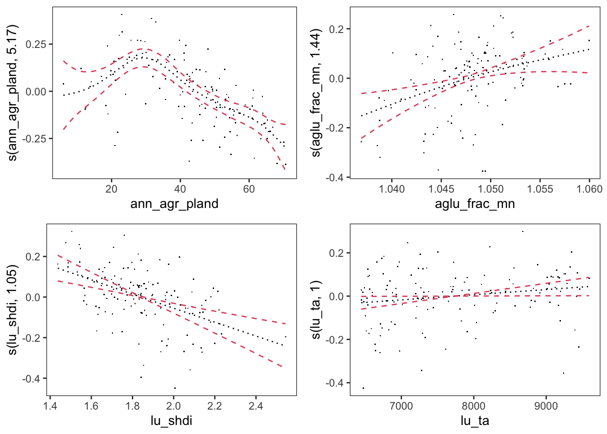
Predicted effects against actual points. Covariates of each plot(not on x axis) held at moderate landscape averages.
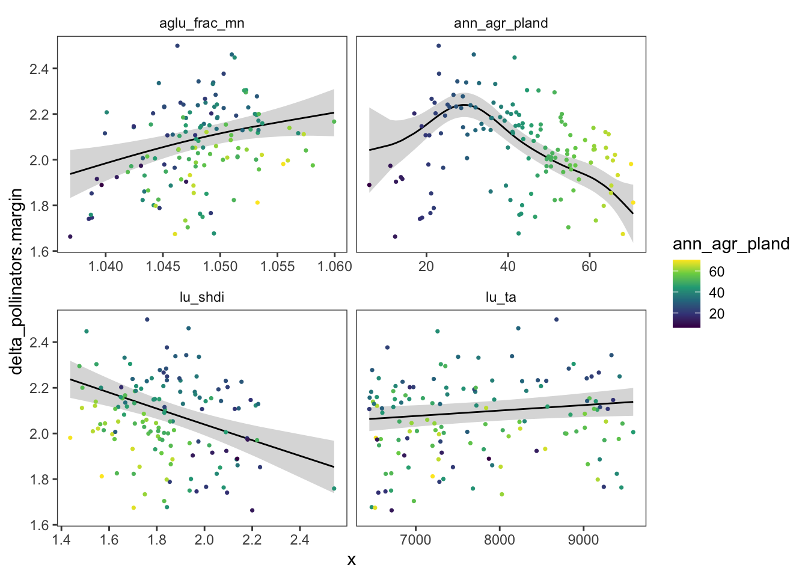
A composite variable of log ratio of annual to perennial ag
Using the composite variable isn’t as helpful now because the log ratio of perennial to annual ag is correlated with natural habitat, iji, and Shannon diversity.
dpol.mod.gam3 <- gam(delta_pollinators.margin ~
s(prn_ann_lograt) +
s(ntr_pland) +
# s(aglu_iji) +
s(aglu_frac_mn) +
# s(lu_shdi) +
s(lu_ta),
data = wfs_mod)
summary(dpol.mod.gam3)##
## Family: gaussian
## Link function: identity
##
## Formula:
## delta_pollinators.margin ~ s(prn_ann_lograt) + s(ntr_pland) +
## s(aglu_frac_mn) + s(lu_ta)
##
## Parametric coefficients:
## Estimate Std. Error t value Pr(>|t|)
## (Intercept) 2.059182 0.009838 209.3 <2e-16 ***
## ---
## Signif. codes: 0 '***' 0.001 '**' 0.01 '*' 0.05 '.' 0.1 ' ' 1
##
## Approximate significance of smooth terms:
## edf Ref.df F p-value
## s(prn_ann_lograt) 5.785 6.932 2.822 0.0112 *
## s(ntr_pland) 4.734 5.773 15.105 <2e-16 ***
## s(aglu_frac_mn) 2.207 2.797 22.609 <2e-16 ***
## s(lu_ta) 1.000 1.000 3.588 0.0606 .
## ---
## Signif. codes: 0 '***' 0.001 '**' 0.01 '*' 0.05 '.' 0.1 ' ' 1
##
## R-sq.(adj) = 0.586 Deviance explained = 62.9%
## GCV = 0.014572 Scale est. = 0.01297 n = 134concurvity(dpol.mod.gam3, full = TRUE)## para s(prn_ann_lograt) s(ntr_pland) s(aglu_frac_mn) s(lu_ta)
## worst 2.984842e-25 0.5121413 0.5323226 0.4314362 0.3998508
## observed 2.984842e-25 0.3352122 0.4740053 0.3626445 0.1941480
## estimate 2.984842e-25 0.4192974 0.4653250 0.3098697 0.1985939Partial effects plots and partial residuals

Predicted effects against actual points. Covariates of each plot(not on x axis) held at moderate landscape averages.
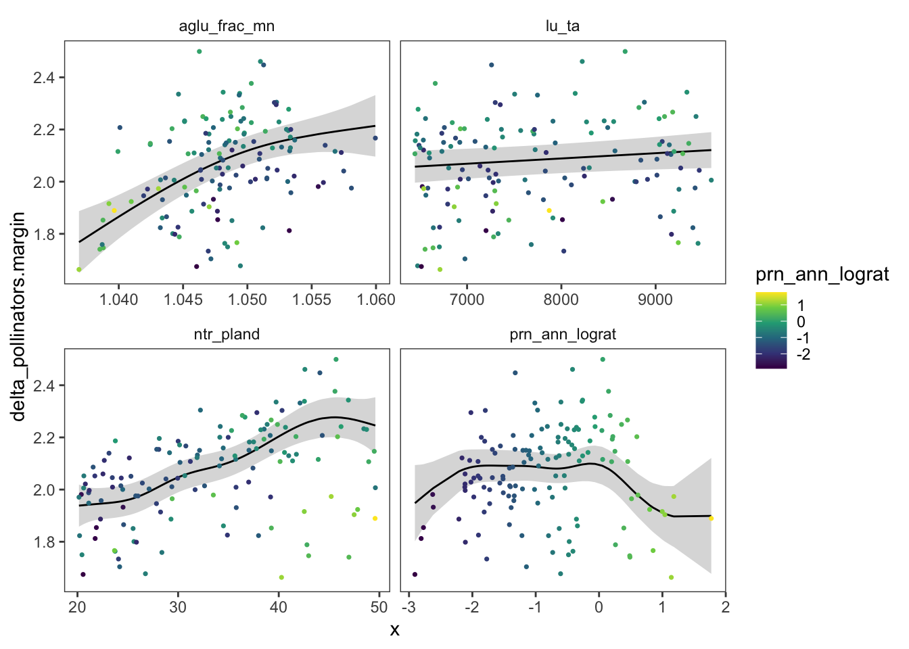
Pollinator delta for natural landscapes (>50% natural)
Correlation between predictors
pairs.panels(wfs_nat %>%
select(ann_agr_pland, prn_agr_pland, aglu_iji,
lu_shdi, aglu_frac_mn, ntr_pland, prn_ann_lograt),
cex.cor = 1, cex.labels=1, cex=0.5, method = "pearson")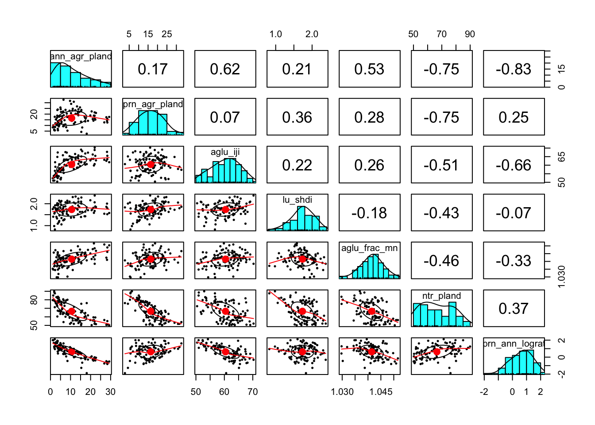
dpol.nat.gam <- gam(delta_pollinators.margin ~
s(ann_agr_pland) +
s(aglu_iji) +
s(prn_agr_pland) +
s(aglu_frac_mn) +
s(lu_shdi) +
s(lu_ta),
data = wfs_nat)
summary(dpol.nat.gam)##
## Family: gaussian
## Link function: identity
##
## Formula:
## delta_pollinators.margin ~ s(ann_agr_pland) + s(aglu_iji) + s(prn_agr_pland) +
## s(aglu_frac_mn) + s(lu_shdi) + s(lu_ta)
##
## Parametric coefficients:
## Estimate Std. Error t value Pr(>|t|)
## (Intercept) 2.18192 0.01558 140.1 <2e-16 ***
## ---
## Signif. codes: 0 '***' 0.001 '**' 0.01 '*' 0.05 '.' 0.1 ' ' 1
##
## Approximate significance of smooth terms:
## edf Ref.df F p-value
## s(ann_agr_pland) 2.017 2.550 3.178 0.031438 *
## s(aglu_iji) 1.000 1.000 12.522 0.000645 ***
## s(prn_agr_pland) 1.000 1.000 23.518 5.53e-06 ***
## s(aglu_frac_mn) 4.765 5.806 2.631 0.019219 *
## s(lu_shdi) 1.000 1.000 3.450 0.066582 .
## s(lu_ta) 1.000 1.000 1.393 0.241085
## ---
## Signif. codes: 0 '***' 0.001 '**' 0.01 '*' 0.05 '.' 0.1 ' ' 1
##
## R-sq.(adj) = 0.373 Deviance explained = 44.1%
## GCV = 0.02751 Scale est. = 0.024269 n = 100concurvity(dpol.nat.gam, full = FALSE)## $worst
## para s(ann_agr_pland) s(aglu_iji) s(prn_agr_pland) s(aglu_frac_mn) s(lu_shdi)
## para 1.000000e+00 3.857414e-26 7.102279e-27 8.374562e-27 9.739771e-27 3.770422e-27
## s(ann_agr_pland) 3.848054e-26 1.000000e+00 6.549448e-01 4.093743e-01 3.540108e-01 1.950597e-01
## s(aglu_iji) 7.013940e-27 6.549448e-01 1.000000e+00 2.455593e-01 1.852198e-01 4.458729e-01
## s(prn_agr_pland) 8.348788e-27 4.093743e-01 2.455593e-01 1.000000e+00 3.060851e-01 3.464310e-01
## s(aglu_frac_mn) 1.182897e-26 3.540108e-01 1.852198e-01 3.060851e-01 1.000000e+00 2.973626e-01
## s(lu_shdi) 3.821034e-27 1.950597e-01 4.458729e-01 3.464310e-01 2.973626e-01 1.000000e+00
## s(lu_ta) 7.050402e-26 2.282794e-01 2.356749e-01 2.483118e-01 2.671084e-01 2.569061e-01
## s(lu_ta)
## para 7.002749e-26
## s(ann_agr_pland) 2.282794e-01
## s(aglu_iji) 2.356749e-01
## s(prn_agr_pland) 2.483118e-01
## s(aglu_frac_mn) 2.671084e-01
## s(lu_shdi) 2.569061e-01
## s(lu_ta) 1.000000e+00
##
## $observed
## para s(ann_agr_pland) s(aglu_iji) s(prn_agr_pland) s(aglu_frac_mn) s(lu_shdi)
## para 1.000000e+00 1.158768e-31 2.260178e-34 9.483548e-35 1.334958e-29 1.856124e-32
## s(ann_agr_pland) 3.848054e-26 1.000000e+00 5.509737e-01 2.920831e-01 2.543979e-01 1.283663e-01
## s(aglu_iji) 7.013940e-27 5.614680e-01 1.000000e+00 1.277180e-01 9.993670e-02 1.648543e-01
## s(prn_agr_pland) 8.348788e-27 2.675150e-01 1.014273e-01 1.000000e+00 4.254180e-02 2.008678e-01
## s(aglu_frac_mn) 1.182897e-26 2.849231e-01 8.842859e-02 1.272280e-01 1.000000e+00 8.651317e-02
## s(lu_shdi) 3.821034e-27 1.481387e-01 1.001373e-01 1.754914e-01 1.884950e-01 1.000000e+00
## s(lu_ta) 7.050402e-26 7.203623e-02 1.192860e-01 6.929281e-02 7.891603e-02 3.157460e-02
## s(lu_ta)
## para 3.438756e-33
## s(ann_agr_pland) 6.118301e-02
## s(aglu_iji) 8.825786e-02
## s(prn_agr_pland) 1.341929e-01
## s(aglu_frac_mn) 1.215356e-01
## s(lu_shdi) 6.316372e-02
## s(lu_ta) 1.000000e+00
##
## $estimate
## para s(ann_agr_pland) s(aglu_iji) s(prn_agr_pland) s(aglu_frac_mn) s(lu_shdi)
## para 1.000000e+00 4.998547e-29 2.906636e-29 2.043384e-29 1.141700e-29 1.786835e-29
## s(ann_agr_pland) 3.848054e-26 1.000000e+00 4.570519e-01 2.544625e-01 2.502590e-01 1.089337e-01
## s(aglu_iji) 7.013940e-27 3.452204e-01 1.000000e+00 1.200054e-01 1.251437e-01 1.464432e-01
## s(prn_agr_pland) 8.348788e-27 1.796533e-01 9.867048e-02 1.000000e+00 1.413385e-01 1.957122e-01
## s(aglu_frac_mn) 1.182897e-26 3.061359e-01 8.065645e-02 1.247965e-01 1.000000e+00 8.348052e-02
## s(lu_shdi) 3.821034e-27 1.252359e-01 9.606945e-02 1.625455e-01 1.534707e-01 1.000000e+00
## s(lu_ta) 7.050402e-26 7.166742e-02 1.130923e-01 6.522488e-02 5.954659e-02 6.485441e-02
## s(lu_ta)
## para 2.040769e-28
## s(ann_agr_pland) 6.287434e-02
## s(aglu_iji) 9.252974e-02
## s(prn_agr_pland) 1.273986e-01
## s(aglu_frac_mn) 1.191427e-01
## s(lu_shdi) 6.290970e-02
## s(lu_ta) 1.000000e+00Partial effects plots and partial residuals
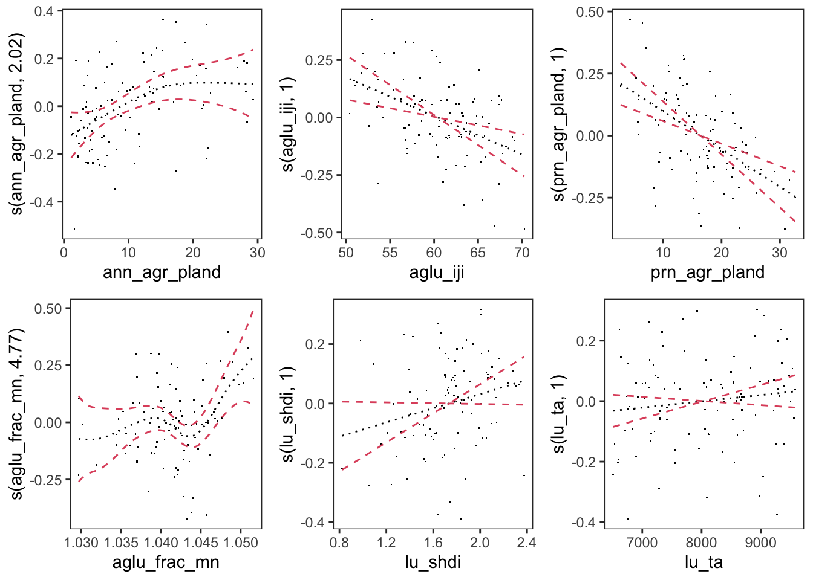
Predicted effects against actual points. Covariates of each plot(not on x axis) held at natural landscape averages.
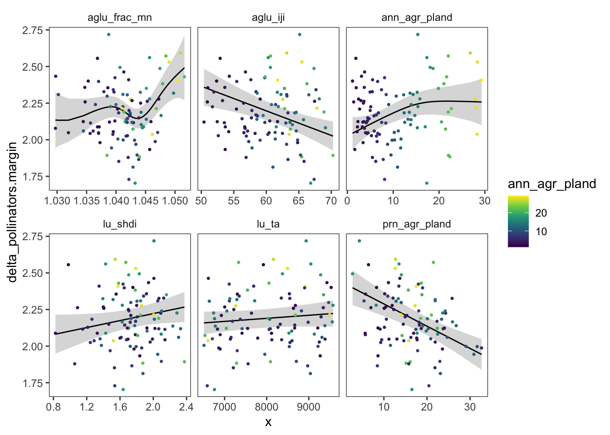
Without landscape iji
IJI increased concurvity when included with annual agriculture.
dpol.nat.gam2 <- gam(delta_pollinators.margin ~
s(ann_agr_pland) +
# s(aglu_iji) +
s(prn_agr_pland) +
s(aglu_frac_mn) +
s(lu_shdi) +
s(lu_ta),
data = wfs_nat)
summary(dpol.nat.gam2)##
## Family: gaussian
## Link function: identity
##
## Formula:
## delta_pollinators.margin ~ s(ann_agr_pland) + s(prn_agr_pland) +
## s(aglu_frac_mn) + s(lu_shdi) + s(lu_ta)
##
## Parametric coefficients:
## Estimate Std. Error t value Pr(>|t|)
## (Intercept) 2.18192 0.01664 131.2 <2e-16 ***
## ---
## Signif. codes: 0 '***' 0.001 '**' 0.01 '*' 0.05 '.' 0.1 ' ' 1
##
## Approximate significance of smooth terms:
## edf Ref.df F p-value
## s(ann_agr_pland) 1.000 1.000 0.360 0.54985
## s(prn_agr_pland) 1.000 1.000 16.585 9.93e-05 ***
## s(aglu_frac_mn) 4.483 5.489 3.441 0.00685 **
## s(lu_shdi) 1.000 1.000 2.148 0.14620
## s(lu_ta) 1.000 1.000 1.192 0.27772
## ---
## Signif. codes: 0 '***' 0.001 '**' 0.01 '*' 0.05 '.' 0.1 ' ' 1
##
## R-sq.(adj) = 0.284 Deviance explained = 34.6%
## GCV = 0.030573 Scale est. = 0.027673 n = 100concurvity(dpol.nat.gam2, full = TRUE)## para s(ann_agr_pland) s(prn_agr_pland) s(aglu_frac_mn) s(lu_shdi) s(lu_ta)
## worst 2.160138e-25 0.6834082 0.6730752 0.6980271 0.6382087 0.5642694
## observed 2.160138e-25 0.6046352 0.6023262 0.5910508 0.5334038 0.4380498
## estimate 2.160138e-25 0.5668519 0.5459427 0.5612572 0.5016855 0.4293660Partial effects plots and partial residuals
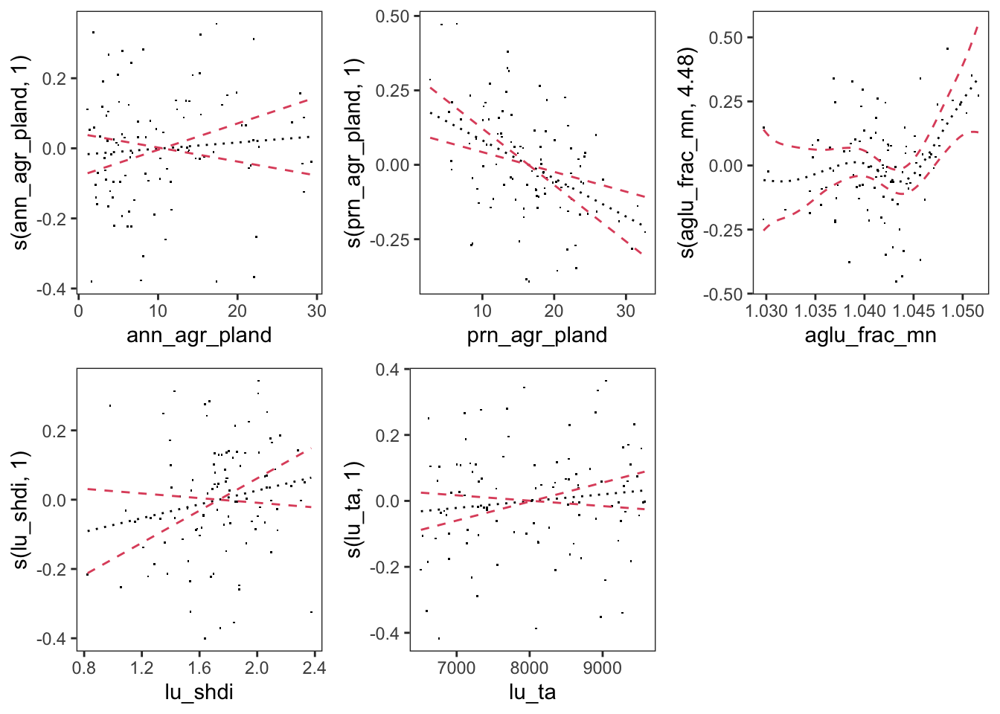
Predicted effects against actual points. Covariates of each plot(not on x axis) held at natural landscape averages.
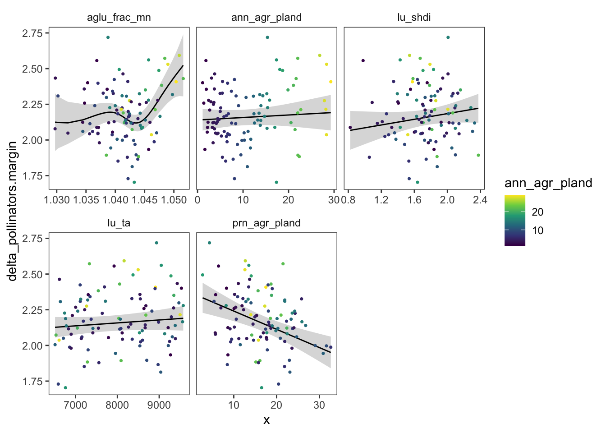
A composite variable of log ratio of annual to perennial ag
Dropping IJI as before, but also Shannon diversity because it correlates with natural habitat
dpol.nat.gam3 <- gam(delta_pollinators.margin ~
s(prn_ann_lograt) +
s(ntr_pland) +
s(aglu_frac_mn) +
s(lu_ta),
data = wfs_nat)
summary(dpol.nat.gam3)##
## Family: gaussian
## Link function: identity
##
## Formula:
## delta_pollinators.margin ~ s(prn_ann_lograt) + s(ntr_pland) +
## s(aglu_frac_mn) + s(lu_ta)
##
## Parametric coefficients:
## Estimate Std. Error t value Pr(>|t|)
## (Intercept) 2.18192 0.01672 130.5 <2e-16 ***
## ---
## Signif. codes: 0 '***' 0.001 '**' 0.01 '*' 0.05 '.' 0.1 ' ' 1
##
## Approximate significance of smooth terms:
## edf Ref.df F p-value
## s(prn_ann_lograt) 1.632 2.052 5.768 0.00396 **
## s(ntr_pland) 1.000 1.000 7.285 0.00829 **
## s(aglu_frac_mn) 4.034 4.969 3.622 0.00547 **
## s(lu_ta) 1.000 1.000 1.742 0.19016
## ---
## Signif. codes: 0 '***' 0.001 '**' 0.01 '*' 0.05 '.' 0.1 ' ' 1
##
## R-sq.(adj) = 0.277 Deviance explained = 33.3%
## GCV = 0.030596 Scale est. = 0.027945 n = 100concurvity(dpol.nat.gam3, full = TRUE)## para s(prn_ann_lograt) s(ntr_pland) s(aglu_frac_mn) s(lu_ta)
## worst 3.600625e-25 0.5543747 0.6085286 0.5234792 0.4890565
## observed 3.600625e-25 0.3734575 0.4237586 0.3083644 0.2302300
## estimate 3.600625e-25 0.3524390 0.3844675 0.3702891 0.2247974Partial effects plots and partial residuals
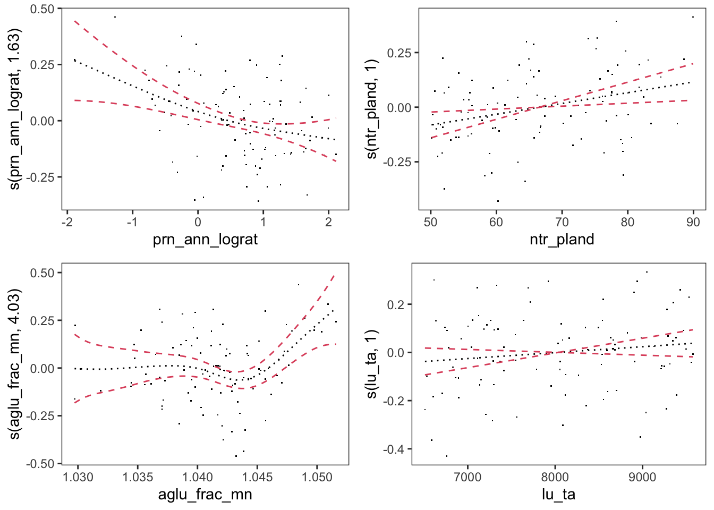
Predicted effects against actual points. Covariates of each plot(not on x axis) held at natural landscape averages.
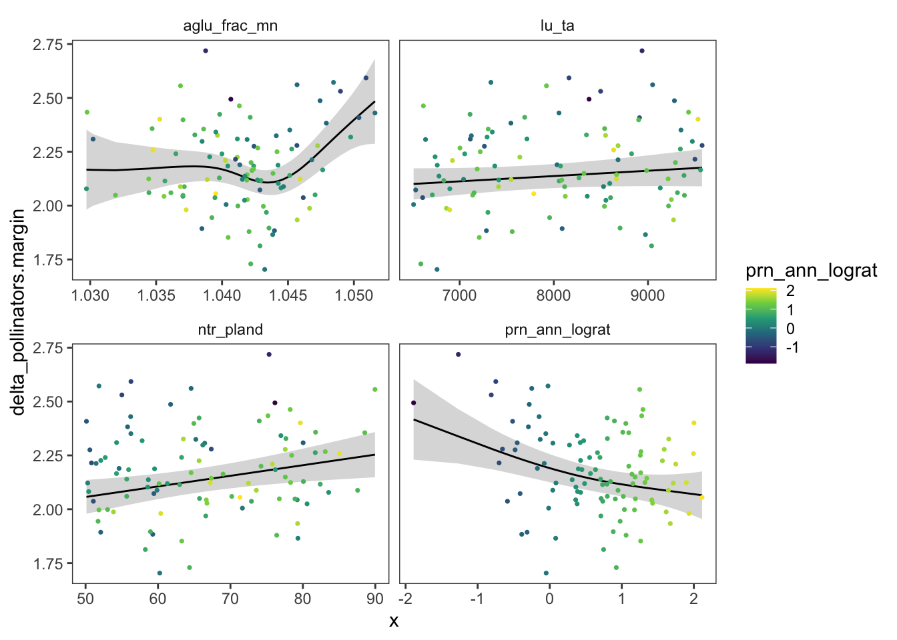
A complete dataset pollinator model attempt
Correlation between independent variables in all landscapes.
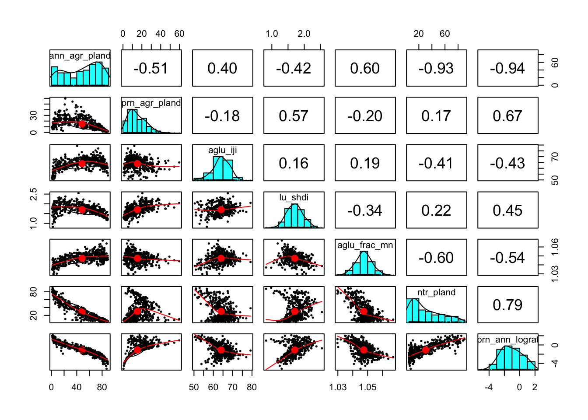
dpol.all.gam <- gam(delta_pollinators.margin ~
te(prn_ann_lograt,ntr_pland) +
s(aglu_frac_mn) +
# s(aglu_iji) +
# s(lu_shdi) +
s(lu_ta),
data = wfs_lsm)
summary(dpol.all.gam)##
## Family: gaussian
## Link function: identity
##
## Formula:
## delta_pollinators.margin ~ te(prn_ann_lograt, ntr_pland) + s(aglu_frac_mn) +
## s(lu_ta)
##
## Parametric coefficients:
## Estimate Std. Error t value Pr(>|t|)
## (Intercept) 1.952304 0.005673 344.1 <2e-16 ***
## ---
## Signif. codes: 0 '***' 0.001 '**' 0.01 '*' 0.05 '.' 0.1 ' ' 1
##
## Approximate significance of smooth terms:
## edf Ref.df F p-value
## te(prn_ann_lograt,ntr_pland) 15.890 17.965 68.850 <2e-16 ***
## s(aglu_frac_mn) 4.077 5.132 15.425 <2e-16 ***
## s(lu_ta) 2.363 2.942 3.235 0.0285 *
## ---
## Signif. codes: 0 '***' 0.001 '**' 0.01 '*' 0.05 '.' 0.1 ' ' 1
##
## R-sq.(adj) = 0.757 Deviance explained = 77%
## GCV = 0.014857 Scale est. = 0.014064 n = 437concurvity(dpol.all.gam, full = TRUE)## para te(prn_ann_lograt,ntr_pland) s(aglu_frac_mn) s(lu_ta)
## worst 8.633949e-26 0.5580195 0.5561864 0.15535816
## observed 8.633949e-26 0.2652733 0.4276922 0.08238049
## estimate 8.633949e-26 0.1385324 0.3595034 0.06119628Partial effects plots and partial residuals
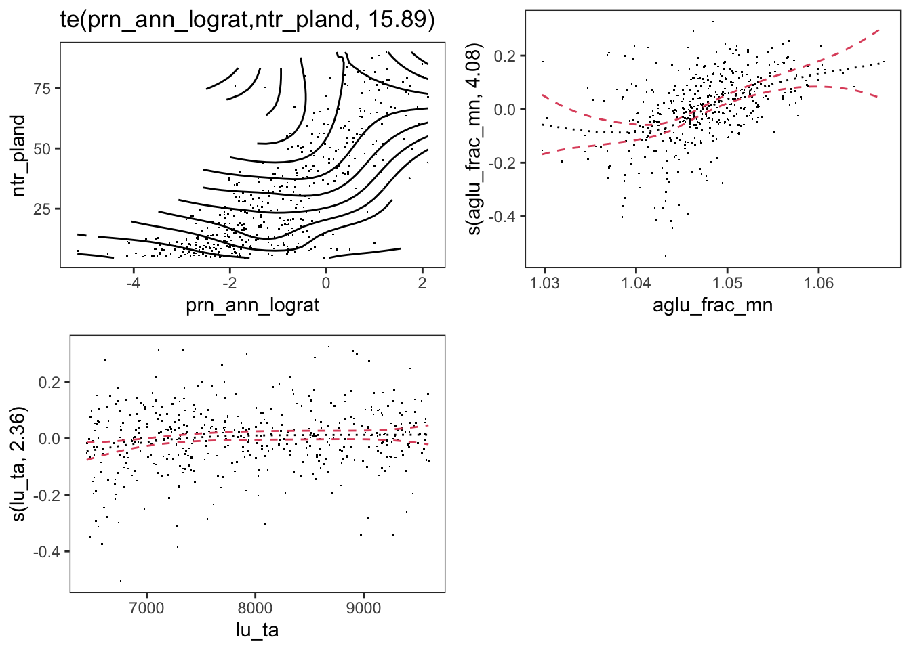